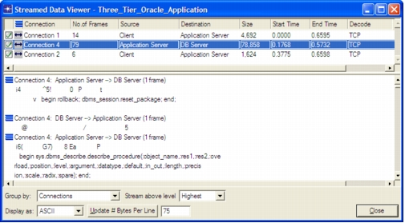

Streamed Data Viewer The Streamed Data Viewer shows all data transferred over a particular network layer as a single concatenated stream of data. This feature is particularly useful when you want to view all application data (typically all data above TCP) transferred over a single connection or within a single application message. To open the Streamed Data Viewer: 1) Select a group of packets or messages in the Protocol Viewer, Data Exchange Chart, or Tree View window. 2) Right-click and choose “Show Streamed Bytes for Selected Items”. For information about the operations in this window, see: • Table 19-3 Streamed Data Viewer: Main Window Options • The right-click menu operations in the Data Stream Viewer are identical to those in the Protocol Decode Viewer; see Table 19-2 Protocol Decode Viewer: Right-Click Menu Options Figure 19-2 Streamed Data Viewer  The following table lists the main window options for the Streamed Data Viewer. Table 19-3 Streamed Data Viewer: Main Window Options Option Description Display As Displays the streamed data in ASCII, Hexadecimal, or EBCDIC format Group By Determines how the streamed data is shown: • Connections—Show a single data stream for each connection • Application Messages—Show a single data stream for each message Note—This window shows data for selected items only, and not necessarily all the data in that connection or message. Stream Above Level Determines the protocol layer above which all data is shown. If this menu is set to 0, the stream includes all data in the stream; if this menu is set to Highest, the stream includes data at the highest (application) layer only. The Highest setting is typically the most useful for viewing streams of application data. Update # Bytes Per Line Determines the number of bytes to show in each line of the Streamed Data Viewer treeview